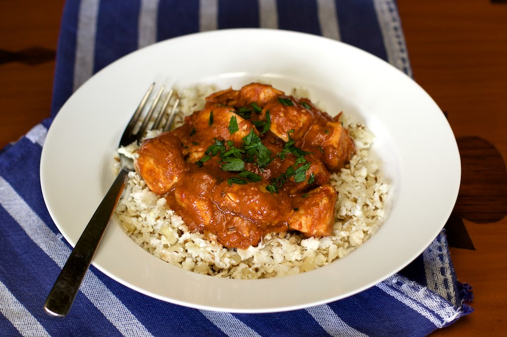

Butter Chicken Recipe

This dish is a Indian curry dish which is cooked in a spiced tomato and butter-based mahkan gravy
Butter chicken, or Murgh Makhani, is a popular Indian curry featuring chicken marinated in yogurt and spices, then simmered in a rich, creamy, spiced tomato-based sauce with butter and cream.
First Marination
- 1.1 lbs boneless chicken
- 1/2 teaspoon Kashmiri red chili powder
- 1/4 teaspoon salt
- 3/4 tablespoon lemon
Second Marination
- 1/3 Greek yogurt
- 3/4 tablespoon ginger garlic paste
- 1/8 teaspoon turmeric
- 3/4 teaspoon garam masala
- 1/2 teaspoon cumin powder
- 1 teaspoon coriander powder
- 1 teaspoon kasuri methi
- 3/4 tablespoon oil
For Sauce
- 2 tablespoon butter
- 2 inch cinnamon piece
- 3 green cardamoms
- 3 cloves
- 1 1/2 onions
- 600 grams fresh tomatoes
- 3/4 tablespoon ginger garlic paste
- 1 green chilies
- 28 whole raw cashews
- 1/2 cup water
- 1 teaspoon Kashmiri chili powder
- 1 teaspoon garam masala
- 1 teaspoon coriander powder
- 1/2 teaspoon cumin powder
- 1/2 teaspoon salt
- 1 teaspoon sugar
- 1/2 tablespoon kasuri methi
- 1 1/2 cups hot water
- 1/3 cup heavy cream
- 2 tablespoons coriander leaves
Prep
- Marinate chicken and rest for 30 minutes
- Blender the tomatoes, onions, cashews and water. Need a smooth puree.
Make the sauce
- Melt butter in pan then add spices
- When sizzling, add ginger, garlic paste and green chilies.
- turn of heat and stir in red chili powder, garam masala, cumin and coriander powder
- stir in tomato cashew puree
- mix well and cover then bring to a boil medium high heat
- pur hot water and simmer for 10 minutes
Grill or roast chicken
- one tbsp butter then place chicken pieces
- fry on medium heat for 2 minutes
- dont need to cook fully just waiting for marinade to dry up
Finally Assemble
- add chicken to the butter gravy and add more hot water
- stir in salt, sugar and kasuri methi
- turn off heat and add heavy cream then garnish